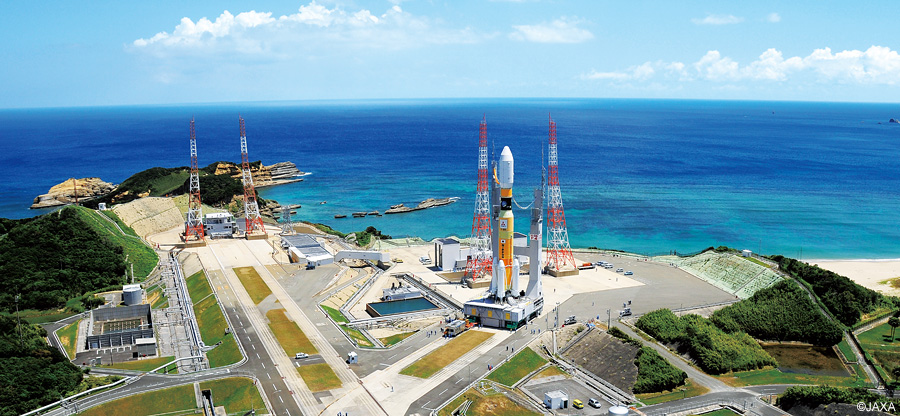

ASTRO-H Japanese X-ray telescope (49)
On March 26th, more than $286 million were lost, when the Hitomi, also known as ASTRO-H, a Japanese X-ray telescope disintegrated in orbit. The main cause of the disintegration was due to the uncontrolled spinning of the telescope, that made parts of the structure itself , as the solar sails to came off the satellite. But what caused that?
The Attitude Control System, on March 26th, began using the Star Tracking System to control the position of the satellite. But the STT did not update the position monitoring system, which was essential to the satellite itself. Since the two systems contained two pieces of information different from each other, they did not agree on the rotation rate of the satellite. In fact, since the IRU was the most important system, the satellite program reacted in response to what the IRU gave as data input. But this data was not correct, and so the satellite started spinning.

Each step for the configuration update system was wrong, and the satellite kept spinning more and more, until it exceeded design parameters. Each part of the satellite began to come off and the satellite disintegrated in orbit. For future events, the programmers are now paying more attention on the calculations that the STT has to perform, in fact the STT calculates and fixes the data from the IRU, but in the case of ASTRO-H, the STT just aggravated the problem, it tried to correct a problem that actually didn't exist.